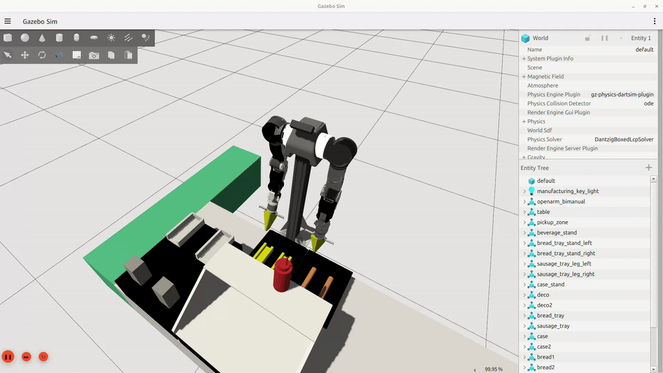
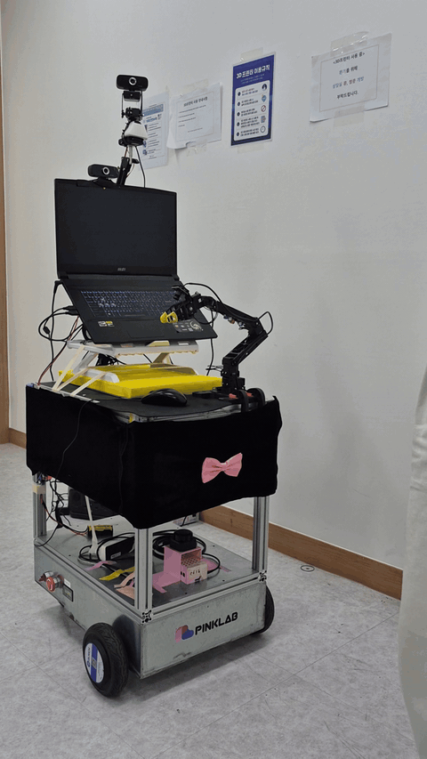
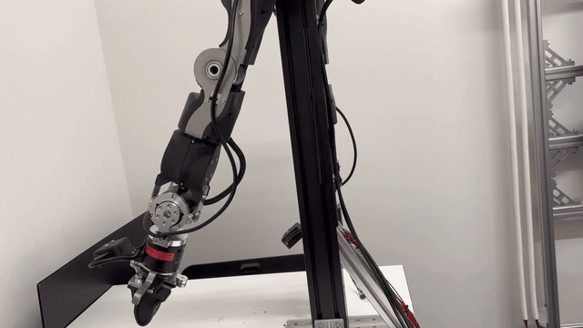

식음료 제조 기능
- 주문 정보를 기반으로 로봇팔이 음료와 간단한 식음료를 제조
02 / 설계

02 / 설계

03 / 주요 기능
키오스크 주문
테이블 웹 주문
음성 주문 시연
03 / 주요 기능

① 케이스 집기

② 빵 배치

③ 소시지 배치

④ 케첩 도포
03 / 주요 기능

빵 배치

소시지 배치

케첩 도포
03 / 주요 기능

Gazebo 콜라 제공 검증

실물 커피 제공 검증
03 / 주요 기능
03 / 주요 기능

픽업
실물 로봇 · home → t03
03 / 주요 기능
왼쪽으로 제공
실물 로봇 · t03 → home
03 / 주요 기능

[1] 군중 탐지·그룹화
사람을 감지하고(YOLOv8) 가까이 모인 무리를 한 그룹으로 묶습니다(DBSCAN)

[2] 그룹 접근
인원이 가장 많은 무리를 골라 다가갑니다 (PD 제어)
[3] 자기소개
무리에 도착해 아바타가 표정·음성으로 인사합니다

[4] 미니게임
간단한 미니게임(cafe_ninja)으로 흥미를 끕니다
03 / 주요 기능
[5] 메뉴 홍보
메뉴를 음성으로 소개하며 방문을 유도합니다

1인 추종
관심 보인 근접 대상을 따라가며 응대합니다 (P+EMA, 근접 대상 추종)

병렬: 감정 분석
전 과정에서 표정으로 감정을 살펴(geva→rapport) 불쾌 감지 시 즉시 멈춥니다(abort→idle)
04 / 주요 기술

execute 시 팔이 순간적으로 떨어지거나 trajectory가 불안정하게 실행

robot dynamics와 trajectory 실행 조건을 보정해 동작 안정화
04 / 주요 기술

회전 게인이 높고 화면 속 대상 위치(bbox) 떨림이 그대로 cmd_vel에 전달돼 좌우 진동 발생
회전 게인 인하 + EMA 필터로 떨림 완화 + 회전 후 전진(align_gate)으로 동시 활성 구간 제거 → 안정적 추종
04 / 주요 기술
좁은 통로 통과 실패 · 협소 구간 경로 생성 실패
골 포즈 도달 실패 · 목표 지점 정렬·정지 실패
후미 충돌 · 주행 중 로봇 후미가 장애물과 충돌
외벽 충돌 판정 · 코스트맵상 외벽과 충돌로 주행 중단
04 / 주요 기술
RViz · home → t03
RViz · t03 → home
04 / 주요 기술
주행 중 장애물 충돌 상황